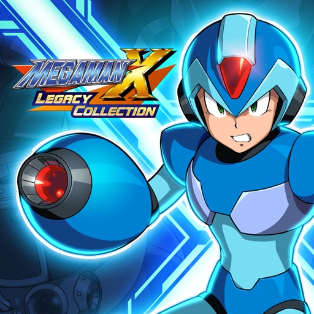
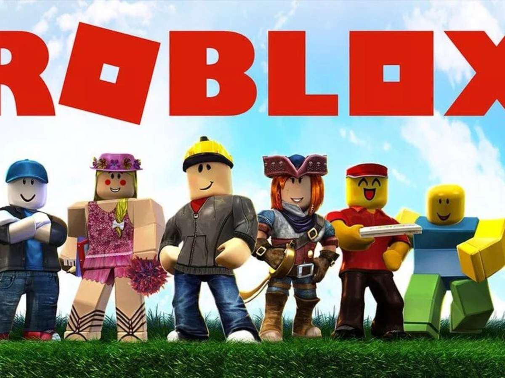
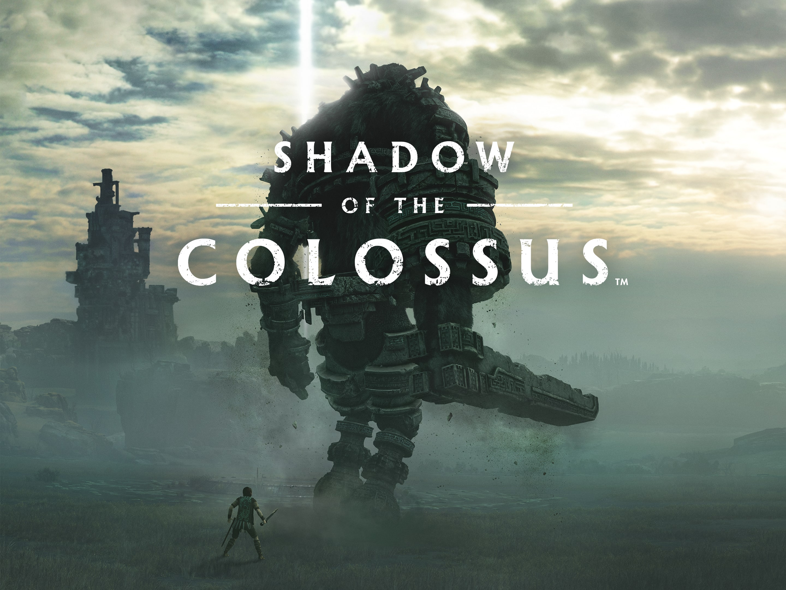
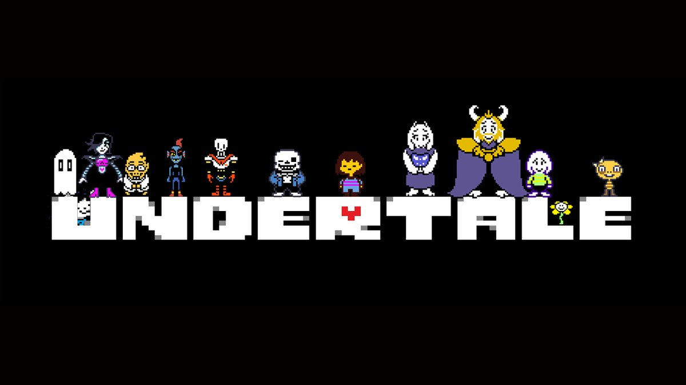

Jogos lindos, amáveis e impressionáveis:
Crash

O que é: Crash Bandicoot é uma franquia de jogos eletrônicos desenvolvida originalmente pela Naughty Dog para o console PlayStation. A série passou por várias desenvolvedoras e foi publicada em diversas plataformas posteriormente. Os jogos são do gênero plataforma com diversos spin-offs do gênero corrida e em grupo.
Gameplay:

Cena: Crash está de costas a tela, olhando para a frente, indicando o caminho que ele deve seguir. A frente dele está um inimigo(um carangueijo) e alguns obstáculos. Este é o início do jogo.
God of War

O que é: God of War é uma série de jogos eletrônicos de ação-aventura criada por David Jaffe da Santa Monica Studio, da Sony. Iniciada em 2005 no console PlayStation 2, tornou-se carro-chefe para a marca PlayStation, consistindo em nove jogos em várias plataformas.
Gameplay:

Cena: Kratos(o personagem ao centro com armadura) encarando o primeiro chefe do segundo jogo da franquia - o Colosso de Rodes -, o colosso ja está ferido no olho. Sim o primeiro chefe como de costume nos jogos da franquia tem mais de 30 metros de altura
GTA: San Andreas

O que é: Grand Theft Auto: San Andreas é um jogo eletrônico de ação-aventura desenvolvido pela Rockstar North e publicado pela Rockstar Games. É o quinto título principal da série Grand Theft Auto e foi lançado em outubro de 2004 para PlayStation 2 e em junho de 2005 para Xbox e Microsoft Windows.
Gameplay:

Cena: Na imagem o personagem conhecido como CJ(Carl Johnson) pilota a moto e na garupa está o seu companheiro "Big Smoke"(que logo irá ter uma reviravolta bem grande para quem não conhece). Esta é uma missão bem chata chamada "Siga o trem", na qual devemos pilotar a moto enquanto Big atira nos inimigos em cima do trem.
Hollow Knight

O que é: Hollow Knight é uma aventura de ação clássica em estilo 2D por um vasto mundo interligado. Desenvolvido pela Team Cherry e inicialmente lançado para Microsoft Windows em 24 de Fevereiro de 2017, e posteriormente macOS e Linux. Foi portado em 2018 para o Nintendo Switch, Xbox One e Playstation 4 pela Shark Jump Studios.
Gameplay:

Cena: Nesta cena o personagem "O Cavaleiro"(no ar, com "chifres" brancos) pula para golpear um chefe(Mestre Sheo) no jogo. Todos são insetos humanóides e vivem nas ruínas de uma antiga cidade de seres estranhos.
Megaman
O que é: Mega Man é uma franquia criada pela Capcom, estrelado pelo personagem homônimo Mega Man, bem como seus vários homólogos. A série é bem conhecida, tendo mais de cinquenta versões lançadas, o que a torna a série mais produtiva da Capcom.
Gameplay:

Cena: Nesta cena Megaman(o que está com o braço atirando uma rajada de energia e que está com o punho levantado) enfrenta o comumente segundo chefe "Storm Eagle"(uma águia humanóide com armadura robótica) do jogo Megaman X.
Minecraft

O que é: Minecraft é um jogo eletrônico sandbox de sobrevivência criado pelo desenvolvedor sueco Markus "Notch" Persson e posteriormente desenvolvido e publicado pela Mojang Studios, cuja propriedade intelectual foi obtida pela Microsoft em 2014.
Gameplay:

Cena: Na imagem, o jogador está em cima de uma das casas de uma vila aldeã, à sua direita está uma plantação de trigo, à sua frente uma outra casa e mais ao fundo uma torre de pedras.
Roblox
O que é: Roblox é uma plataforma de jogos MMOSG e sandbox baseados normalmente em mundo aberto, multiplataforma e simulação que permite criar do zero seu próprio mundo virtual chamado de 'experiência' ou 'place' onde os milhares de jogadores da plataforma podem interagir sobre.
Gameplay:

Cena: Esta foto foi retirada do jogo "Jailbreak", nele você escolhe entre ser um policial ou ladrão. Sendo policial, deve-se prender os bandidos que escaparem ou que estão cometendo roubos. Se a escolha for de ladrão os afazeres passão a ser: fugir da cadeia e roubar o máximo de dinheiro que puder.
Shadow of the colossus
O que é: Shadow of the Colossus, lançado no Japão como Wander and the Colossus, é um jogo eletrônico de ação-aventura desenvolvido pela SCE Japan Studio e publicado pela Sony Computer Entertainment para o PlayStation 2.
Gameplay:

Cena: (Este é o meu xodó) Na imagem pode ser visto o penúltimo colosso a ser enfrentado(décimo quinto), seu nome é Argus e empunha uma espécie de espada de pedra, não é um dos maiores do jogo. Sua luta acontece em uma cidadela antiga e é uma das lutas mais difíceis do jogo. Seu visual é inspirado em gorilas e mais humanóide.
The last of us

O que é: The Last of Us é uma franquia de jogos eletrônicos de ação-aventura e survival horror exclusiva da PlayStation, criada por Neil Druckmann. A franquia é situada em um mundo pós-apocalíptico, com seres humanos hostis e criaturas canibais infectadas por uma mutação do fungo cordyceps.
Gameplay:

Cena: Quer saber o que não é diferenciar certo e errado? Assista ou jogue este. Na cena Ellie(a garota na janela) está em uma viagem entre alguns estados com o Joel(motorista) rumando para o hospital em que ela precisa ser levada. Nesta cena os dois se aproximam mais um do outro e dialogam sobre seus gostos, entretanto, esta cena antecede um dos momentos mais desesperadores do jogo.
Undertale
O que é: Undertale é um RPG eletrônico criado pelo desenvolvedor independente norte-americano Toby Fox. Nele, o jogador pode controlar uma criança humana que caiu em uma caverna, uma região grande e isolada sob a superfície da Terra, separada por uma barreira mágica.
Gameplay:

Cena: Pense em algo que não era esperado por ninguém. Um jogo em que você pode ser você mesmo como na vida real, ou um completo anjo e até mesmo o pior dos piores demônios. Isto é Undertale, um jogo de escolhas que você consegue terminar sem matar ninguém, olha que incrível. Ele foi desenvolvido por apenas uma pessoa: Toby Fox. Na imagem o coração vermelho é o jogador e ele está desviando das "bolhas" jogadas pelos monstros.